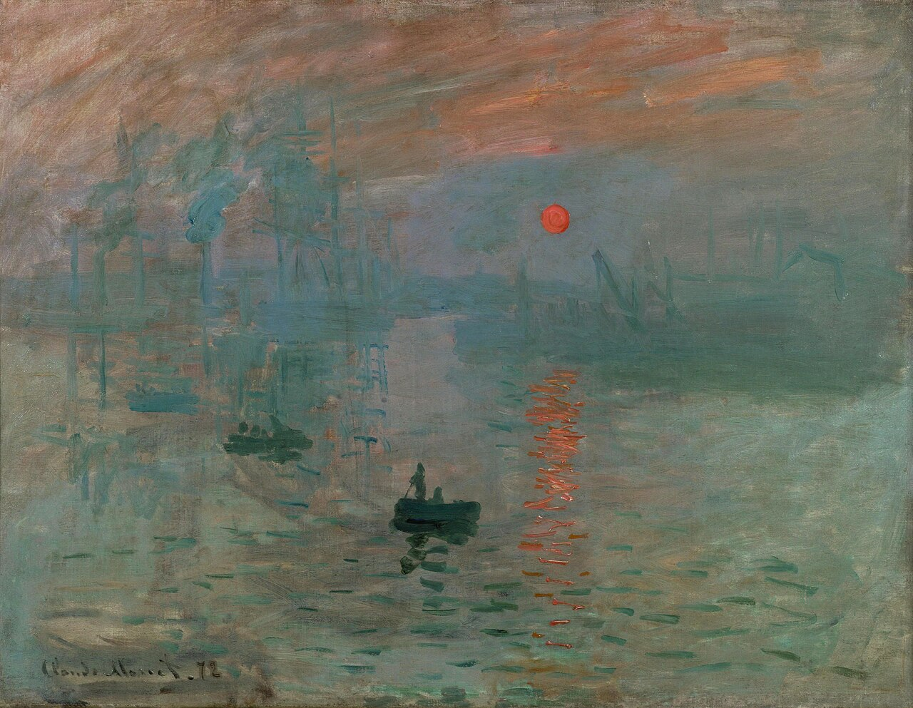
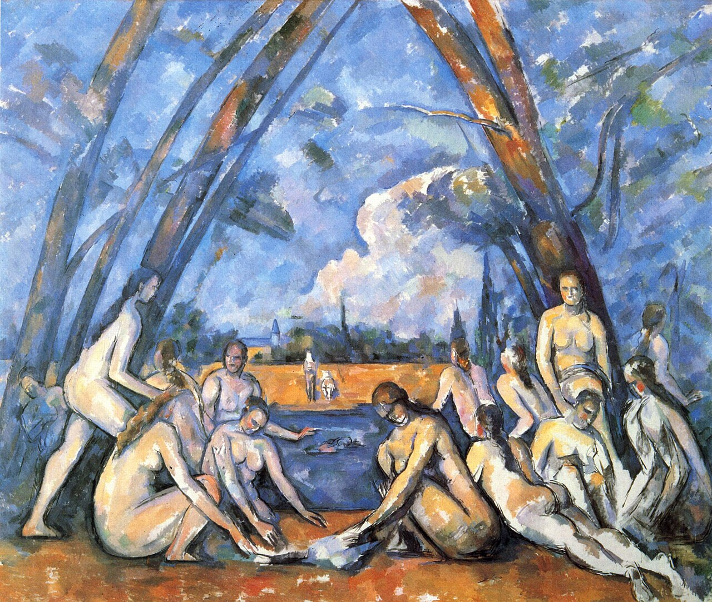
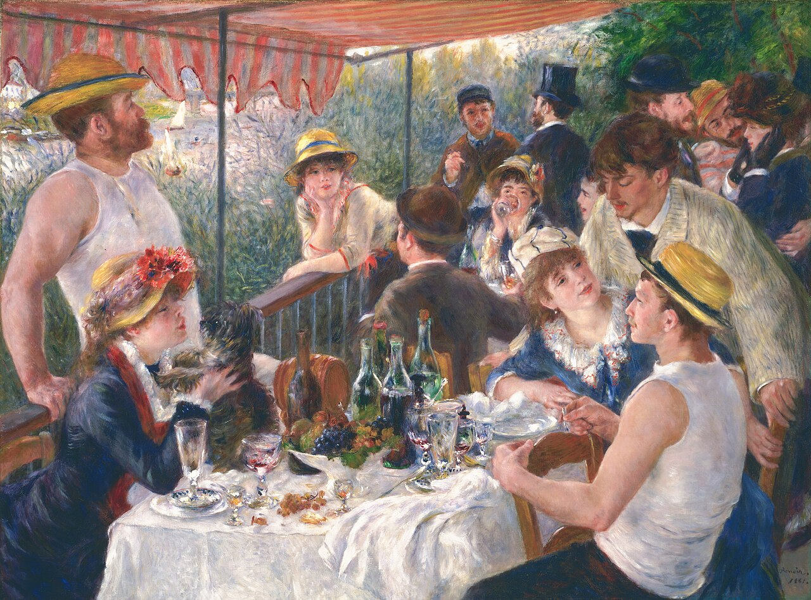
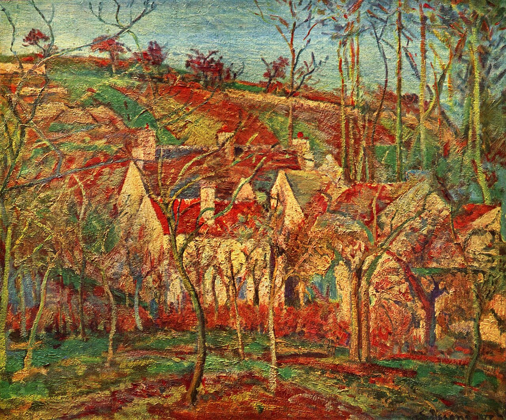
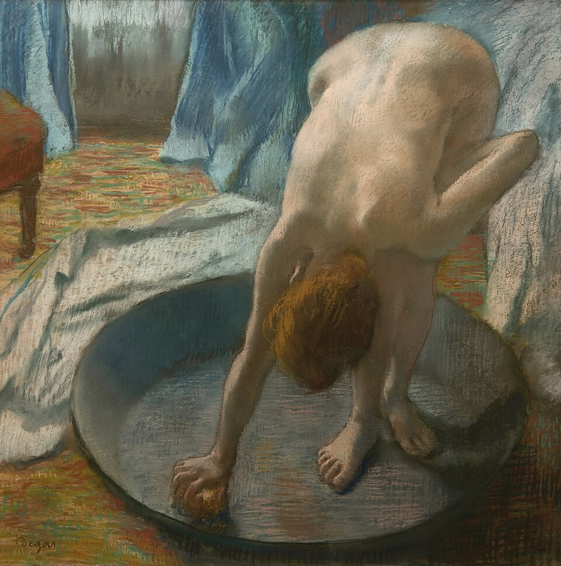

Основоположники
Основоположники импрессионизма в живописи — Клод Моне, Поль Сезанн, Пьер Огюст Ренуар, Камиль Писсарро, Эдгар Дега. Художники объединились в 1874 году для проведения независимой выставки. Их лидером и идейным вдохновителем выступил Клод Моне. Единственной женщиной, принимавшей участие в первой выставке импрессионистов, была Берта Моризо.




